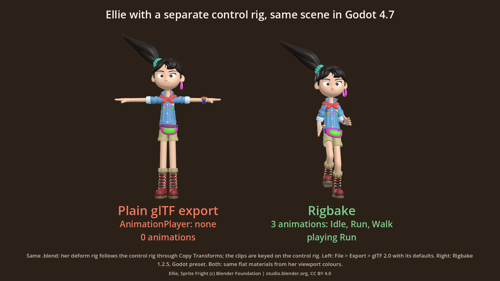

Guides / Blender animation export
Blender export has no animations? If your character uses a control rig, here's why, and the free workaround
For Godot, Unity and Unreal. Measured on Blender 4.2, 4.5 and 5.0. Published 6 November 2026.
1. The symptom
The character animates fine in Blender. You select the game rig and its mesh, export a .glb or an .fbx with the default settings, and the file has no animations. In Godot, the imported scene's AnimationPlayer is empty. Re-importing the file into Blender shows the same thing: the mesh and the skeleton, no clips.
2. The cause
Many game characters are built from two armatures:
- a control rig, the one the animator keys, with IK feet, pole targets and handles;
- a deform rig (the game rig), the one that bends the mesh and goes to the engine. Each of its bones follows the matching control bone through a Copy Transforms constraint.
The keys live in the control rig's actions. The deform rig moves, but it has no action of its own. Blender's default export writes the actions of the armatures it exports, so for the deform rig there is nothing to write. A workflow discussion in Godot's proposals tracker (#4680) describes the same setup in passing: the key frames "are mainly defined on the IK control bones".
Baking constraints does not help here by itself: the deform rig's constraints are fine, and the exporters do evaluate them (see Do you need to bake constraints before export?). What is missing is an action for the exporter to pick up.
3. Measured
We built the standard game-rig pattern in code: a deform armature with Copy Transforms on every bone, targeting a control armature that holds the keys, then exported only the deform rig and its mesh with Blender's defaults.
| Export (defaults, selected objects: deform rig + mesh) | Animations in the file |
|---|---|
| glTF 2.0 (.glb) | 0 |
| FBX | 0 |
| Either, with deform bones only | 0 |
The result was the same on Blender 4.2, 4.5 and 5.0. In a separate check, a tester built a second character from scratch in this style (a control rig with IK feet and four clips; a deform rig whose 18 bones follow it through Copy Transforms) and got the same: 0 animations in glTF and in FBX, both when re-imported into Blender and when imported into Godot 4.7.

4. The free workaround, step by step
Blender can export the control rig's motion through the deform rig, if you tell the exporter to sample the scene instead of looking for the deform rig's actions:
- glTF: File > Export > glTF 2.0. Under Include, tick Selected Objects. Under Animation, set Mode to Scene.
- FBX: File > Export > FBX. Under Include, tick Selected Objects. Under Bake Animation, keep it on and untick both NLA Strips and All Actions.
Both came out exact in our test (every deform bone within our 1 mm / 0.001 rad tolerance, in fact 0 / 0), but only for the clip that is currently active on the control rig. The other clips are not in the file.
For several clips:
- Select the control rig and, in the Action Editor, make the first clip its active action.
- Select the deform rig and its mesh, and export with the settings above.
- Rename the file after the clip (for example
hero_walk.glb). - Repeat for each clip.
If you only need the one clip that is active on your control rig, this free workaround gives an exact result, and you don't need Rigbake.
5. With Rigbake
Rigbake, our Blender add-on, does that clip-by-clip loop for you, into one file. Select the deform rig or its mesh, not the control rig: Rigbake finds the control rig through the constraints, bakes each of its clips from the rest pose and exports one clip per action, named after the action. A clip counts when it is the control rig's active action or sits on its NLA; any other action is named in the panel with an Add to NLA button. If you select the control rig alone, the Export button is greyed out, with a sentence naming the rig to select. On the tester's character, the default settings exported 4 clips, every deform bone within 2e-6 m of the live rig at every frame, and Godot 4.7 listed the same 4 animations. Rigbake for Blender.
6. Godot import tips
Whichever way you export, the file can be exact and the playback in Godot still a little off, because of two import settings:
- Animation > FPS (Import dock, default 30): set it to your Blender frame rate (Scene Properties > Format > Frame Rate). Godot re-samples every clip at this rate.
- Optimizer of the AnimationPlayer (Import dock > Advanced... > select the AnimationPlayer node): on by default. It drops keys it judges redundant. Turn it off where you need the exact motion.
Click Reimport after changing them. With Godot's defaults, our every-frame check measured bones up to 13 cm off on fast motion, and the tester's run clip was 40 mm off. With the FPS matched and the Optimizer off, every bone matched Blender within 0.0002 m in our check, and the tester's four clips matched exactly.
7. Limits
- Rigbake handles one control rig per deform rig. If a deform rig follows two or more armatures, pick the control rig in Rigbake's Advanced Bake section.
- Motion keyed on the armature object itself (not on a bone) is not exported by Rigbake; it tells you so on every export. Blender's own FBX export keeps it. Put it on a root bone.
- The results on this page were measured by re-importing the files in Blender and by importing them in Godot 4.7, not inside Unity or Unreal.
Related: Why Blender's FBX export gives duplicate takes, and why one of them is wrong.